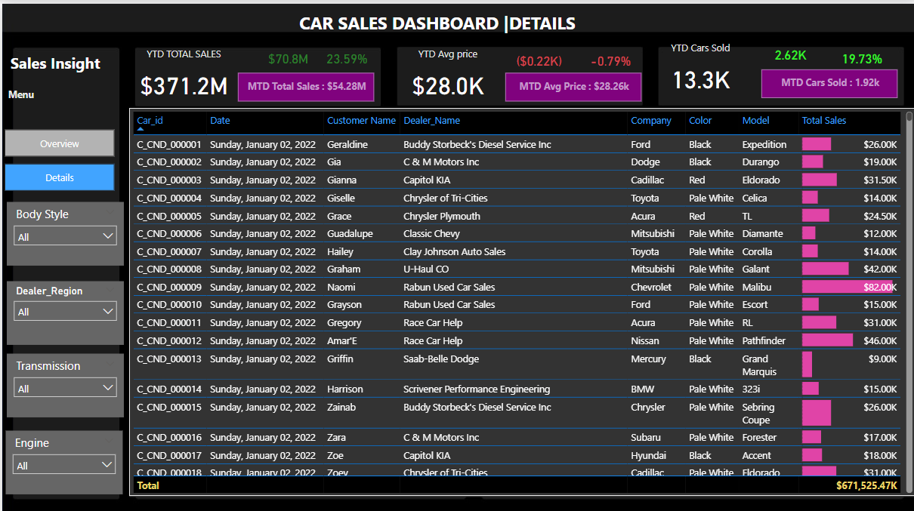
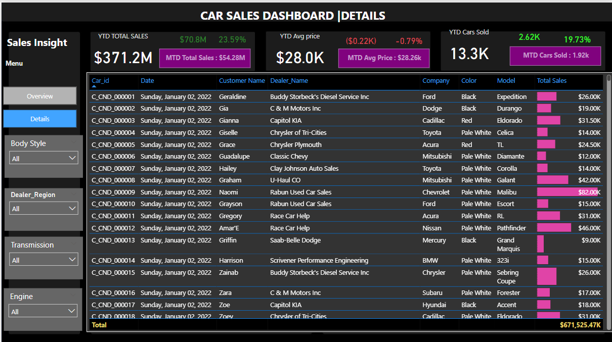
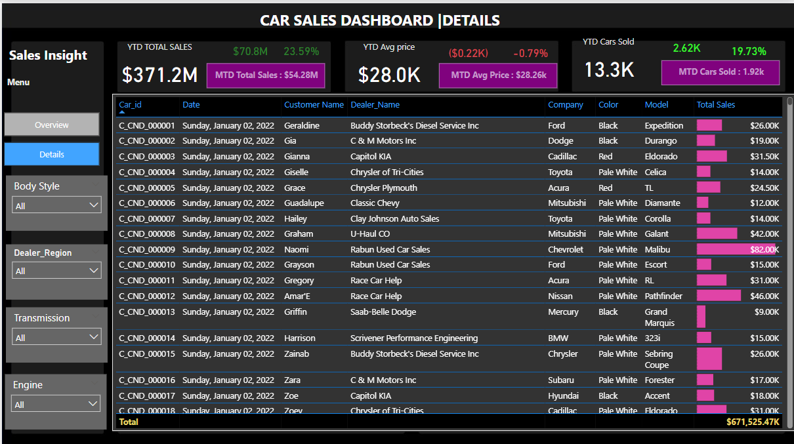

Car Sales Analysis Dashboard
Explore my interactive Car Sales Analysis Dashboard built in Power BI. This project showcases a car sales KPIs, performance trends, and dealership insights to drive informed decisions and boost sales strategy.
 

Welcome to my portfolio! I am Mark Olafare, a Data Analyst skilled in Excel, SQL, Power BI, and Python.
I specialize in transforming raw data into actionable insights through analytics, visualization, and storytelling.
Connect with me on LinkedIn.
Explore my interactive Car Sales Analysis Dashboard built in Power BI. This project showcases a car sales KPIs, performance trends, and dealership insights to drive informed decisions and boost sales strategy.

This project presents an interactive dashboard for analyzing drug sales, offering key insights into sales performance, customer behavior, and product trends. Metrics include quantity sold, revenue, profit, and profit margin, with month-over-month comparisons. The dashboard also highlights top-selling drugs and underperforming customers based on various performance indicators.
A Power BI dashboard that provides key insights into Amazon sales performance, customer behavior, and product categories for smarter business decisions.

This project contains a comprehensive guide on Basic SQL concepts and practical queries, including SELECT statements, filtering using WHERE, using IN, LIKE, and combining conditions with AND. It also includes real-world examples for filtering products, order quantities, and price ranges, along with various ways to refine queries using aliases and DISTINCT keyword.
This project analyzes Alibert Furnishings’ sales, customers, and inventory using SQL to uncover key insights for better decision-making. It identifies top products and customers, evaluates stock levels, and supports future dashboard creation and predictive analysis.
This case study focuses on analyzing product sales data using Excel. It involved cleaning the dataset and uncovering insights related to sales performance, profitability, and regional trends.
This section showcases interactive Tableau dashboards created to explore trends, performance metrics, and business insights across various datasets, enabling clear data storytelling and strategic decision-making.
In this project, we explore the process of data cleaning using Python. Key techniques include handling missing values, correcting data types, removing duplicates, standardizing formats, and ensuring consistency across datasets. These steps are crucial for preparing data for accurate analysis and visualization.
In this analysis, we dive deep into the performance of our latest marketing campaign, breaking down key metrics, ROI, and customer engagement. We evaluate the effectiveness of different marketing channels and the impact of targeted advertisements on customer behavior.